李宏毅老师给出的General Guide：
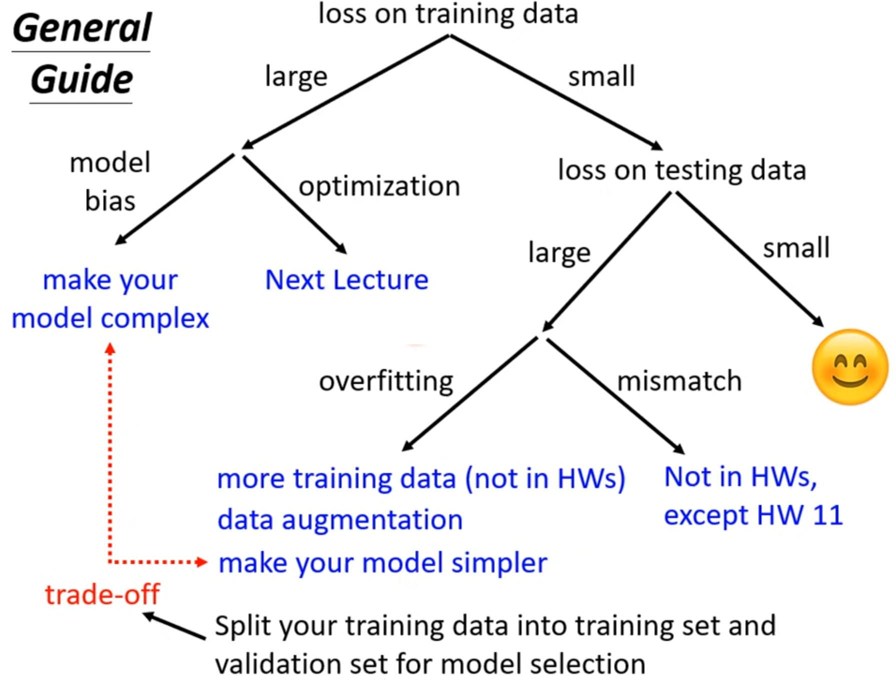
Model Bias指的是Model too simple，这时候我们只需要增加模型的复杂程度即可。
但往往有些时候，增加模型复杂程度后其train的效果反而更差了，此时就出现了Optimization issue，解决方法放在后面。
如果在train的时候loss小，而在test的时候loss很大，很可能发生了overfitting。对此有以下解决方法：
- 增加training data
- 搜集更多data
- 根据自己对data的理解创造data
- 给Model增加限制
- Less parameters or Sharing parameters
- Dropout
- Less features
- Early stopping
- Regularization
那么如何在train的时候选择一个兼顾train loss和test loss的Model呢？使用Cross Validation。
简单原理就是，将training data分为training set和validation set，用validation set模拟testing data，以validation set的loss作为评判模型好坏的标准。
[scode type=”green”]为避免划分出不好的validation set，推荐使用N-fold Cross Validation。[/scode]
batch
问题：为什么要分batch训练？
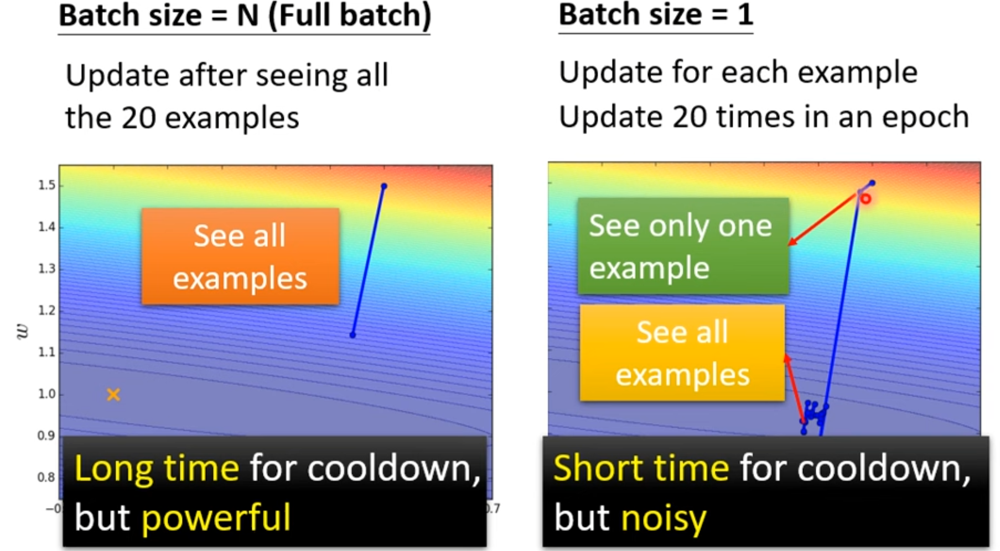
这是一张对比图，可以看到分batch后的区别。
在考虑GPU并行计算后，有以下对比图：
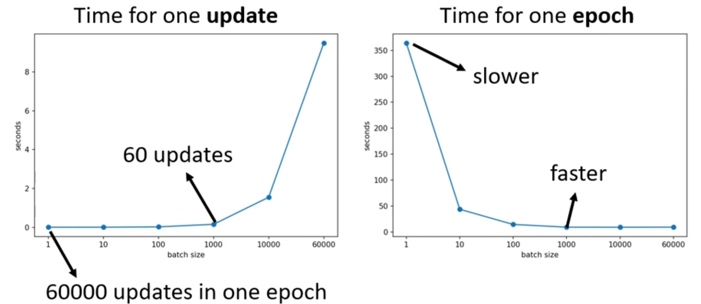
可以发现，在一定范围内，反而大的batch计算效率更快。下面看看在traning上的表现：
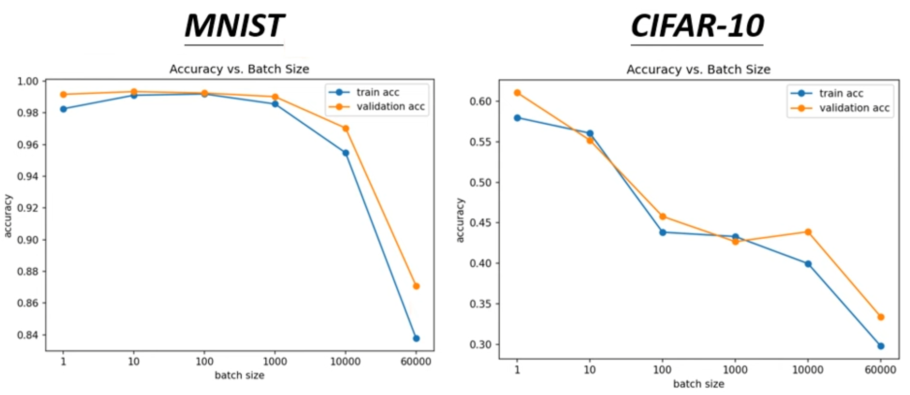
分析可知，batch size越大，在training的时候效果会交叉。问题在于：Optimization。
一个可能的解释是：
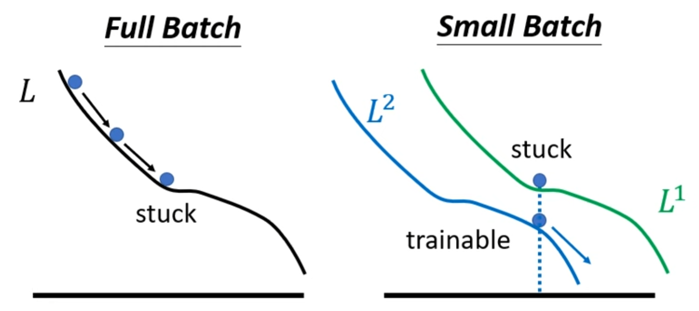
由图可知，大的batch更容易卡住，而小的batch由于batch不同，loss function不同，所以不容易被单一Loss卡住。
另外，小batch在testing data上的表现往往也更好，见下图：
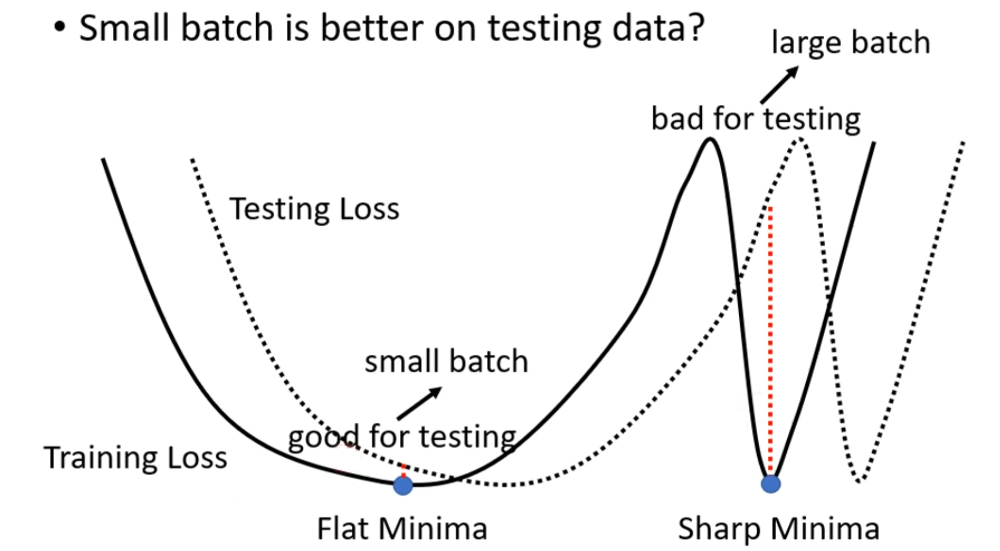
由于testing data和training data的分布是有微小差异的，因此其Loss也会有微小差异。在平坦的地方，training data的minima对应到testing data上时，差异不会很大；而在陡峭的地方，差异就会很大，如图所示。一个可能的解释是：小batch容易找到平坦地区的minima，大batch容易进入峡谷minima。
下面是一张大小batch优缺点对比图：
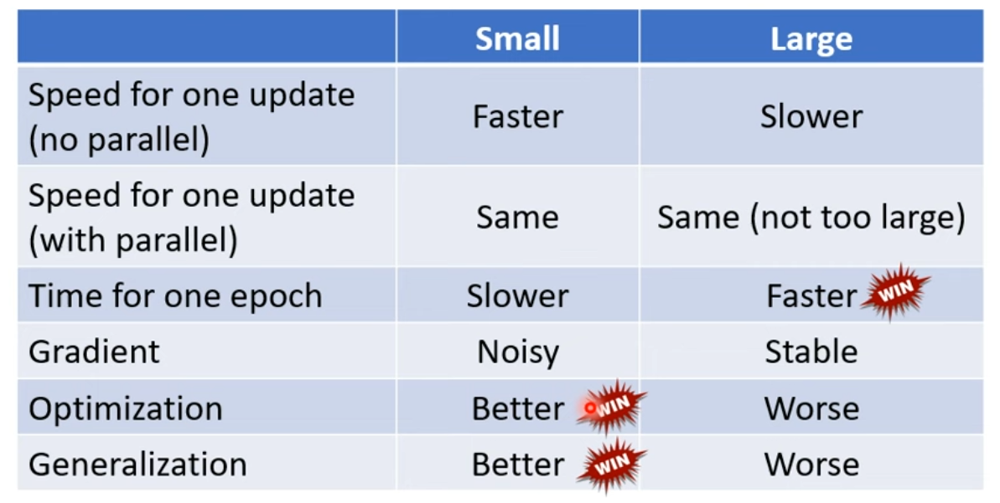
[scode type=”yellow”]batch size是一个hyperparameter，需要我们自己去调[/scode]
momentum
简单理解为之前的动作会对当前的动作产生影响，即Movement不只取决于gradient，之前的Movement也会产生影响。举例如下：
- Strating at $\theta^0$
- Movemoent $m^0=0$
- Compute gradient $g^0$
- Movement $m^1=\lambda m^0-\eta g^0$
- Move $\theta^1=\theta^0+m^1$
- Compute gradient $g^1$
- Movement $m^2=\lambda m^1-\eta g^1$
使用momentum在有些情况下可以帮助走出local minima。将momentum应用到SGD（stochastic gradient descent)上，叫做SGDM。
[scode type=”share”]Gradient Descent是每次计算所有data的Loss的gradient并更新，而SGD是在其中选取部分data计算gradient并更新。
PyTorch中默认提供了SGD的方法，因为训练的时候一般都是分batch训练并且shuffle的，相当于每次随机抽样。如果只有一个batch并且不shuffle，那么虽然调用SGD，但实际相当于普通的Gradient Descent[/scode]
How to solve Optimization issue
Hessian Matrix
Optimization停下的原因可能是陷入了gradient接近于0的点（critical point），而这个点并不是universal minima（可能是local minima或saddle point）。
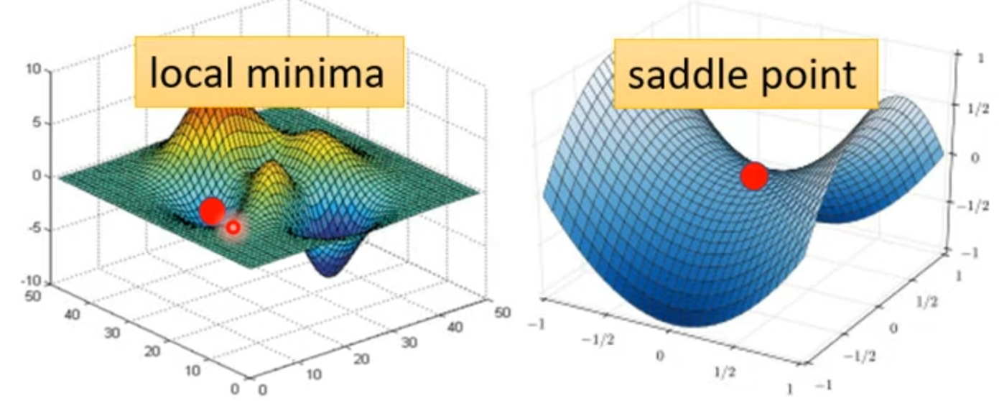
我们能够通过一些方法知道某个点是local minima还是saddle point，即通过$L(\theta^\prime)$估计出其附近的值$L(\theta)$：
其中：
H为Hessian Matrix：
我们把(\theta-\theta^\prime)记作$v$，那么在critical point上，$g=0$：
$v^THv$的正负就能说明是local minima还是saddle point：
- 如果对于某些$v$，$v^THv>0$，说明$L(\theta)>L(\theta^\prime)$，那么$L(\theta^\prime)$是local minima。此时$H$是positive definite的，即其所有eigenvalues都是正的；
- 如果对于某些$v$，$v^THv>0$，某些$v^THv<0$，那么$L(\theta^\prime)$是saddle point。$H$有些eigenvalues为正，有些eigenvalue为负。
当遇到saddle point时，$H$可以指明我们该如何更新。
假设$u$是$H$的一个eigenvector，$\lambda$是$u$对应的eigenvalue，那么有：
假如$\lambda<0$，那么$\lambda ||u||^2=u^THu<0$，那么在$\theta-\theta^\prime=u$的条件下：
那么$L(\theta)<L(\theta^\prime)$，此时可知：$\theta=\theta^\prime+u$
[scode type=”yellow”]实际应用中，由于计算量太大，这个方法很少用到[/scode]
[scode type=”share”]在实际中，由于parameter数量很大，所以在这样的一个条件下很难找到一个所有eigenvalues都是正的Hessian Matrix，因此local minima非常少见，卡住训练的critical point一般都是saddle point。[/scode]
adaptive learning rate
在实际train的过程中，卡住训练的往往不是critical point，有这样一种情况：
可以看到，实际上陷入了这样一种情况。如果选定一个较大的learning rate，那么在山谷里会遇到这种情况；如果选定一个较小的learning rate，那么在平原上会被阻塞住。由此可见，learning rate需要根据gradient进行调整，才能更好的完成optimization。
Root Mean Square
普通的Gradient Descent方法为：$\theta_i^{t+1}=\theta_i^t-\eta g_i^t$
Root Mean Square的方法为：
其中:
这个方法能常用在Adagrad中，针对不同的parameter，其learning rate也不同（陡的地方learning rate小、平缓的地方learning rate大）。但并没有考虑到同一个parameter的gradient变化可能很大的问题。
Exploding Gradient
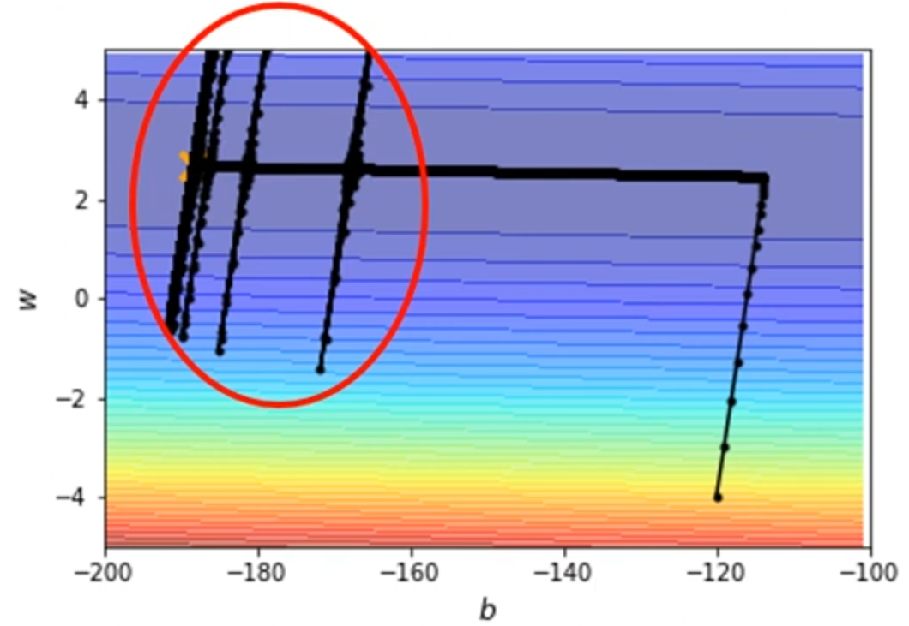
在Root Mean Square中，$\sigma_i^t=\sqrt{\frac{1}{t+1}\sum\limits_{j=0}^t(g_i^j)^2}$，当某一时期的gradient都很小时，$\frac{1}{t+1}\sum\limits_{j=0}^t(g_i^j)^2$就会累积变得很小，那么$\frac{\eta}{\sigma_i^t}$就会变得很大，此时gradient就会暴走。
RMSProp
RMSProp的方法为：
其中:
其中$0<\alpha<1$，是一个hyperparameter。
Adam
Adam可以看作是SGDM+RMSProp。具体如下：
SGDM的原理为：
RMSProp的原理为：
而Adam的方法为：
其中：
一般情况下，$\beta_1=0.9,\eta_2=0.999$。$\epsilon$的作用是防止$\hat{\sigma}^t=0$而暴走，一般取$10^{-8}$。
[scode type=”green”]目前最常用的Optimization就是Adam。[/scode]
Learning Rate Schedualing
Adaptive Learning Rate的基本方法是：
上面提到的gradient暴走问题在这几种方法中都会遇到，解决方法是使用Learning Rate Schedualing：
一种方法是Learning Rate Decay
随着train的进行，我们越来越接近destination，那么此时就可以减小$\eta$，使更新变得平稳。
另一种方法是Warm Up
一种可能的解释是：一开始，$\sigma_i^t$并不精准，所以先使用小的$\eta^t$在初始位置附近进行探索。
L2 Regularization
train的时候，给Loss加上一个parameter的惩罚，就叫做L2 Regularization：
对于SGD，有：
对于SGDM，有：
那么：
对于Adam，有：
上述方法计算$m^t、\sigma^t$时，将$\gamma\theta^{t-1}$算作其中的一部分，叫做L2 regularization，否则叫做weight decay。
Optimization总结
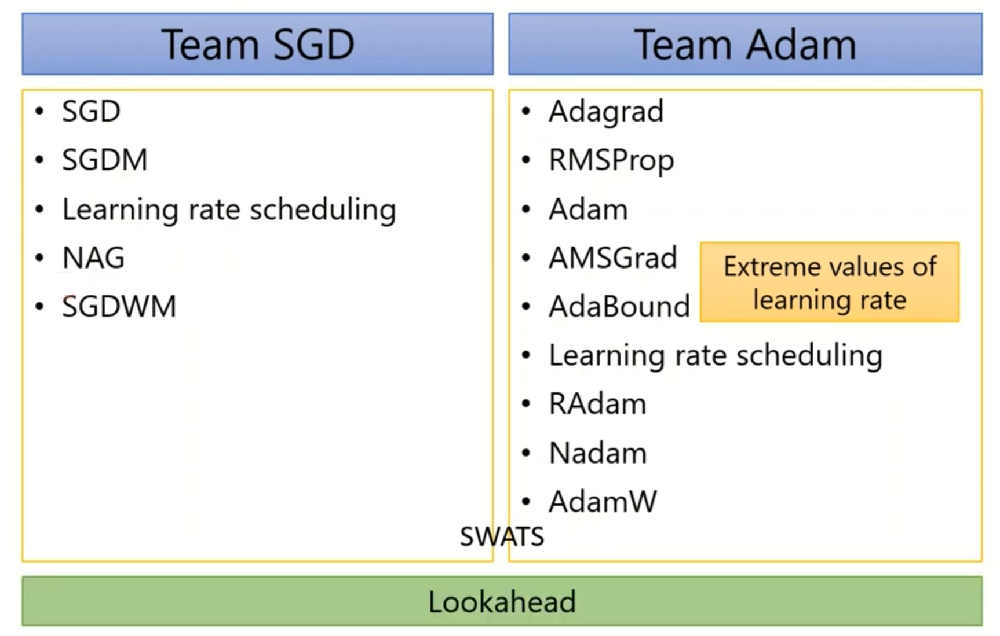
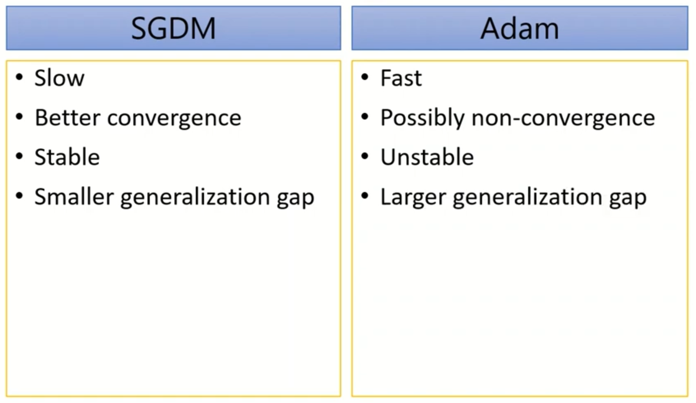
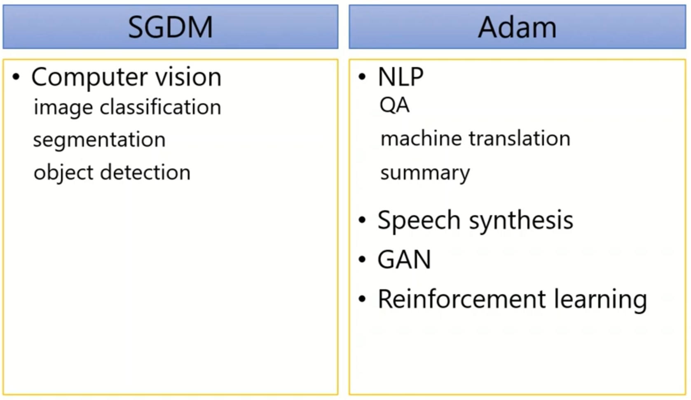